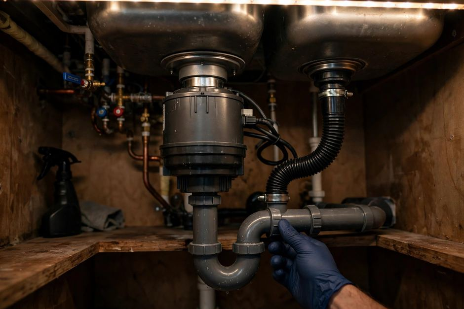
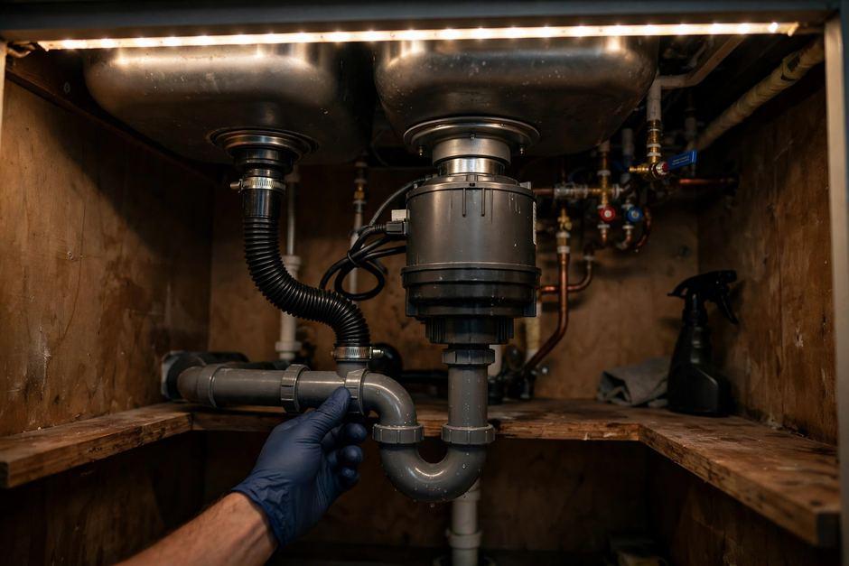

Disposal Services
Garbage Disposal Repair in Belleville, IL
Garbage disposal problems range from jams and humming to leaks and units that stay silent when switched on. This page covers repair and replacement in one place, including drain connections and power supply checks. Hinkle Plumbing Company assesses disposals in Belleville, IL, with sink repair context for the sink and drain above.
1610 W Main St, Belleville, IL 62220Monday through Friday, 8:00 AM to 4:30 PM(618) 677-6556
What This Service Covers
Garbage Disposal Scope in Belleville
Disposal scope covers jam clearing, leak review, power supply checks, drain connections, and replacement planning for kitchens in Belleville, IL. Each concern below is assessed on its own findings, and replacement is discussed where internal faults persist.
Jam Clearing
Jam clearing addresses objects or food material lodged in the grinding chamber. Power is controlled before clearing, jam material is reviewed, and grinding plate movement is checked after clearing to confirm operation.
Humming Unit Review
Humming without grinding can reflect a jammed plate or motor findings. Jam and reset control findings are reviewed first, because humming alone does not identify whether the motor or the chamber drives the fault.
Disposal Leak Review
Leaks at the sink flange, discharge connection, or housing seals are reviewed for source and severity. Connection findings shape repair scope, and housing leaks shape replacement discussion where seals no longer serve.
Silent Unit Review
Units that stay silent when switched on call for power supply, switch, and reset control review. Power findings are checked before internal faults are assumed, because supply concerns mimic unit failure.
Drain Connection Review
Drain connections from the disposal to the trap and drain line are reviewed for alignment, sealing, and flow. Connection findings shape repair scope, and drain behavior is checked after disposal work.
Disposal Replacement
Replacement covers removal of the existing unit and installation of a replacement with new mounting, connections, and sealing. Sink configuration, drain layout, and power context are reviewed during planning.
About Hinkle Plumbing Company
Disposal Work From a Belleville Base
Working from 1610 W Main St in Belleville, Hinkle Plumbing Company covers garbage disposal repair and replacement for kitchens. Jam, leak, power, and drain findings are reviewed together, and scope is discussed before work begins.
Disposals combine grinding parts, seals, drain connections, and a power supply in a compact unit under the sink. Jams, leaks, and power faults each present differently, and assessment separates chamber concerns from connection and supply concerns. Hinkle Plumbing Company reviews each finding plainly, and drain cleaning context helps where drain slowing extends beyond the disposal itself. Findings are discussed before work begins.

How we workImage showing a garbage disposal unit under a kitchen sink in a Belleville home.
How Assessment Works
Disposal Assessment Steps
The steps flex with the condition of the job, but the sequence stays the same.
Discuss Symptoms
Jams, humming, silence, leaks, odors, and drain slowing are discussed to narrow the fault. Symptom details help separate chamber faults from connection, power, and drain concerns.
Control Power Safely
Power supply is controlled before hands or tools approach the chamber. Switch, outlet, and reset control findings are noted, and power context shapes the sequence for clearing and repair.
Check Chamber and Seals
Grinding plate movement, chamber debris, and seal condition are checked for jam and leak findings. Findings shape whether clearing, seal work, or replacement is discussed for the unit.
Check Drain Connections
Discharge, trap, and drain connections are checked for alignment, sealing, and flow. Connection findings shape repair scope, and drain behavior is observed during and after disposal operation.
Test Operation
After work, grinding, drainage, and leak behavior are checked with water running through the unit. Findings are discussed, and use observations are shared so the disposal is understood after completion.
Repair Approaches
Disposal Repair Methods
Disposal methods reflect the fault found, the unit condition, and the drain layout below the sink. Options below are discussed during assessment, and suitability is confirmed for the specific unit rather than assumed.
Manual Jam Release
Manual jam release frees a stuck grinding plate through the bottom socket with power controlled. Plate movement is checked after release, and reset control operation is confirmed before the unit is used again.
Reset Control Review
Reset control review addresses overload trips that stop the unit after a jam or heavy load. Reset findings are checked after jam clearing, and repeated trips shape further assessment of motor and chamber condition.
Seal Replacement Context
Seal work addresses leaks at the flange and discharge connections where seals have worn. Seal condition and mounting stability are reviewed, and housing leaks shape replacement discussion.
Mounting Review
Mounting ring and sink flange stability are reviewed where leaks or movement are present. Mounting findings shape reseating scope, and sink condition is considered alongside disposal findings.
Full Unit Replacement
Full replacement suits units with persistent internal faults, housing leaks, or motor findings that repair does not resolve. Sink, drain, and power findings shape installation planning for the replacement unit.
Drain Flow Check
Drain flow below the disposal is checked to separate disposal faults from drain blockages. Flow findings shape whether drain clearing is discussed alongside disposal work for the kitchen sink.
Common Patterns
When Disposal Repair Is Discussed
Disposal concerns often appear as jams, humming, leaks, or silence at the kitchen sink. The patterns below describe common reasons for assessment, without describing a specific property or job.

Disposal Humming Without Grinding
A common call describes a disposal that hums when switched on without grinding, sometimes after a jam or heavy load. Assessment controls power, checks plate movement and reset control findings, and reviews chamber debris before further steps. Findings shape whether jam release, reset review, or replacement is discussed, and drain flow is checked after operation is restored. Findings are reviewed together before repair scope is discussed for the home.
Water Leaking Under the Kitchen Sink
A common call describes water under the kitchen sink near the disposal, with moisture patterns that point to the flange, discharge connection, or housing seals. Assessment reviews connection alignment, seal condition, and mounting stability to narrow the source. Seal work, reseating, or replacement is discussed on the findings, and cabinet moisture observations are shared. Assessment findings are discussed plainly before work scope is set for the property.
Signs to Note
Disposal Signs That Call for Assessment
Most calls fall into a few patterns. Knowing which pattern applies decides what the visit involves.
Grinding Plate Stuck
A stuck grinding plate can reflect lodged material or internal wear. Plate movement and chamber debris are reviewed with power controlled, and findings shape jam release or replacement discussion. Observations shape the repair discussion.
Humming Without Grinding
Humming without grinding can signal a jammed plate or motor findings. Jam and reset findings are reviewed first, because humming alone does not identify the failed part. Findings are reviewed during assessment.
Leaks at Seals or Connections
Leaks at the flange, discharge, or housing seals can damage cabinets when left unaddressed. Connection and seal findings are reviewed, and housing leaks shape replacement discussion. Findings guide the next steps.
Persistent Disposal Odor
Persistent odor can reflect trapped food material, drain buildup, or chamber condition. Odor patterns and drain flow are reviewed together, and cleaning context is discussed alongside repair findings. Assessment findings guide the response.
Scope Factors
What Shapes Disposal Work Scope
Unit condition, leak findings, and drain context shape disposal scope.
Repair Versus Replacement
Jam clearing, seal work, and full unit replacement carry different scope, and unit condition findings shape the choice. Findings are discussed by phone, and replacement planning includes mounting and connection context.
Leak and Mounting Work
Flange, seal, and mounting findings affect reseating and repair scope. Leak source findings are reviewed during assessment, and cabinet moisture observations are included in the discussion. Findings shape the scope discussion.
Drain and Power Context
Drain flow findings and power supply context add scope where concerns extend beyond the unit. Context findings are included in the discussion, and readers are invited to call to discuss scope for a specific kitchen.
Reviews from Google
What Customers Say on Google
★★★★★
“Very prompt and responsive, the worker was friendly and informative! Will use this company again!”
★★★★★
“Don did an outstanding job for me when I needed him and highly recommend his business”
★★★★★
“Rated 5.0 out of 5 across 3 Google reviews, all five stars.”

Why does a disposal hum without grinding?
Humming often reflects a jammed grinding plate or motor findings after a jam or heavy load. Power is controlled, plate movement and reset control findings are reviewed, and findings shape whether jam release or replacement is discussed for the unit.
What causes leaks under a disposal?
Leaks can come from the sink flange, the discharge connection, or housing seals, and each source calls for a different response. Connection alignment, seal condition, and mounting stability are reviewed to narrow the source before repair scope is set. Findings are reviewed together, and household observations are included in the discussion.
Should hands ever reach into a disposal chamber?
No. Power is controlled before any clearing work, and jam release uses tools designed for the task with power off. Assessment follows a controlled sequence, and household members are advised to avoid reaching into the chamber at any time. Related system findings are reviewed together, and observations shape the response.
What affects the scope of disposal repair or replacement?
Unit condition, jam and seal findings, mounting stability, drain flow, and power supply context shape the scope. Each factor is reviewed during assessment, and readers are invited to call (618) 677-6556 to discuss scope for a specific kitchen. Findings are discussed by phone before work is scheduled.
Related services
Related Services

Sink Repair in Belleville, IL
Sink repair covers basin, drain, trap, and faucet work for the kitchen sink served by the disposal.
Drain Cleaning in Belleville, IL
Drain cleaning covers clearing where kitchen drain slowing extends beyond the disposal unit itself.
Plumbing Repair in Belleville, IL
General plumbing repair covers leaks and fixture problems that can appear alongside disposal faults.Mon–Fri 8:00 AM–4:30 PM
Discuss Garbage Disposal Repair in Belleville
Call (618) 677-6556 during Monday through Friday, 8:00 AM to 4:30 PM to discuss garbage disposal repair in Belleville. Closed Saturday and Sunday. Jam, leak, and power findings are reviewed during assessment.

Talk with the local team
Request Garbage Disposal Repair & Installation
Call (618) 677-6556 during office hours, Monday through Friday, 8:00 AM to 4:30 PM. Tell us what is happening and we will talk through the next step.